Overzicht
Het schoolsysteem in Algerije wordt geregeld door de overheid. Het doel is om alle kinderen een basisopleiding te geven en hen voor te bereiden op vervolgonderwijs of werk.
Kinderen beginnen op 6-jarige leeftijd. Het basisonderwijs duurt 5 jaar en is verplicht. Daarna volgt 4 jaar middenonderwijs. Samen vormen deze 9 jaar verplicht onderwijs. Aan het einde maken leerlingen het BEM-examen dat bepaalt of ze door kunnen naar het voortgezet onderwijs.

Structuur
Het voortgezet onderwijs duurt 3 jaar met een algemene of technische richting. Deze fase wordt afgesloten met het baccalauréat, nodig voor universitaire studies. Het hoger onderwijs werkt met het LMD-systeem: Licence (bachelor), Master en Doctorat. De meeste universiteiten zijn openbaar en staatsgefinancierd.
1
Basisonderwijs
5 jaar vanaf 6 jaar
2
Middenonderwijs
4 jaar, BEM examen
3
Voortgezet
3 jaar, baccalauréat
4
Hoger Onderwijs
LMD-systeem

Toegankelijkheid
Bijna alle kinderen gaan naar de basisschool. In afgelegen dorpen en arme gebieden is toegang soms moeilijk door lange afstanden of een tekort aan scholen. Sommige leerlingen stoppen vroegtijdig, vooral na het middenonderwijs. Meisjes en kinderen uit arme gezinnen lopen extra risico.

Vergelijking NL
Beide landen hebben verplicht onderwijs door de overheid. Een verschil is dat Nederland vroeg selecteert (vmbo/havo/vwo), terwijl Algerije dit later doet via examens. Ook heeft Nederland een duidelijk hbo/wo onderscheid, wat in Algerije minder duidelijk is.
Het Algerijnse systeem lijkt op dat van Marokko en Tunesië, met overeenkomsten met Frankrijk in examens en diploma's.
Vergelijking
Overeenkomsten

Verplicht overheidsonderwijs
Meerdere niveaus
NL: Vroege selectie